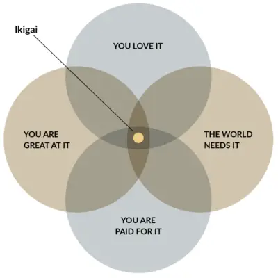

At some stage of our time on Earth, we might wonder about the meaning of our life. If you have ever had this thought, then take comfort that you are not alone. There is ample anecdotal evidence that people are looking for ways to live a more meaningful life. Living a meaningful life and deciding what is meaningful are age-old questions (e.g., Marcus Aurelius wrestled with this question when he was Emperor of Rome from 161 to 180 AD). If you are reading this article, then living a meaningful life must be of interest to you. You might be wondering what we mean by ‘meaningful,’ and whether there are any benefits to striving toward such a way of living. Are there any practical suggestions for how to achieve a meaningful life?In my view, the meaning of life is a deeply personal and subjective concept that varies from person to person. However, I believe that living a purposeful existence involves identifying and pursuing one's values,passions, and goals.This can involve engaging in activities that bring us joy and fulfillment, contributing to society in meaningful ways, and developing strong relationships with others.Mindfulness can play an important role in this process by helping us develop a greater sense of self-awareness and clarity about our priorities and values.
